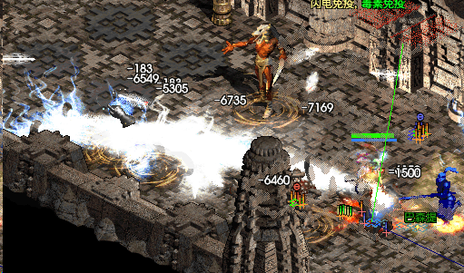
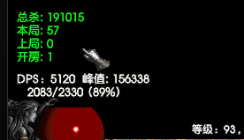

收录 2026 年 9 月 12 日至 11 月 1 日的 S1 赛季中更新，按日期倒序排列。本文记录当时的调整；开季内容见第一赛季完整更新说明。
2026 年 11 月 1 日
修复公会箱子操作卡住、无法关闭或存取失败的问题。
公会快捷存入材料时，优先合并已有的未满堆叠。
修复新任务提示误隐藏护符背包，以及 D2DX 下背包物品不显示的问题。
修正拉基斯之子的异常动画配置，处理相关客户端报错。
补齐腐井首领的声音，以及部分首领缺失的掉落配置。
恢复提取宝珠原有的随机掉落和特殊事件奖励。
修复部分事件掉落地图时品质异常的问题。
启动器诊断包增加历史日志，方便排查问题。
修复金币达到 500 万后停止自动拾取的问题。
超级古代人在原有掉落之外，固定掉落恶魔立方。
修复公会大厅不按所选服务器进入的问题。
公会信息补充成员职级、等级，捐赠排行支持分页。
修复圣杯新发现提示的中文显示。
2026 年 10 月 31 日
适配 PD2 S14 版本，加入收藏、图鉴与公会。
更新 PD2 S14 的稀有装备（黄装）词缀。
同步 PD2 的部分技能和物品调整；SOE 已加强过的技能（如德鲁伊相关技能）保留原有调整。
加入专用护符背包
加入物品品质背景
加入 S14 新符文之语的圣化宝珠。
2026 年 10 月 10 日
右 Shift 可以正确展开镶嵌
按 0 可以正确查看他人装备。
在新材料页中右键可以直接取出一个材料。
光环可以叠加显示
修复可能出现的房间名不能使用的问题
修复服务器连续运行 21 天后会崩溃的问题。
2026 年 10 月 6 日
修复光环同房不可见问题
修复腐化英雄不可见的问题（当时需更新下载约 300 MB 的 PD2 文件）。
金币拾取音效默认关闭
2026 年 9 月 28 日
临时禁止无尽之渴在佣兵上生效，避免游戏崩溃。
增加金钱自动拾取范围，和物品自动拾取保持一致
2026 年 9 月 20 日
修复 SOE 原版隐藏的崩溃问题：普通攻击在特殊情况下被错误删除，导致服务器崩溃。
自动拾取范围从 20 码提高到 50 码。
大紫自动拾取时优先进腰带
个人金币、个人仓库金币上限提高到 3300 万（更高数值存在存档损坏风险，原文计划于下赛季再调整）。
提升香港服务器的稳定性
增加 DPS、峰值和伤害数字显示（可能增加带宽占用，后续视情况优化）。


2026 年 9 月 16 日
增加香港服务器，选择 GS8 即可游玩。
修复一个服务器内存泄露的问题
修复提取宝珠掉率被错误配置为瓶子级别的问题，调整到与拉苏克谜盒相近。
2026 年 9 月 12 日
修复共享仓库保存、续租和材料自动拾取的授权衔接。
拉苏克任务打孔默认无限使用，但需要任务没完成的状态，已消耗的旧奖励不自动恢复。
仇恨宝珠六类共用上限调整为 2／3／4／4／5。
修正 T2／T3／T4 强敌铭文使用计数。
角色按最近使用排序；
启动器高级设置新增火焰之河护眼开关，默认开启，可以随时关闭恢复原版。
鼠标可选原版、红色、绿色或紫色。彩色鼠标需要开启 D2GL 高清鼠标，修改后重启游戏生效。
群内发送 !在线 或 !在，可查看当前天梯游戏内各职业人数和统计时间，与天梯总角色数分开展示。
增加盒子合成异常的诊断记录。
没有找到相关改动，试试其他关键词或清空搜索。